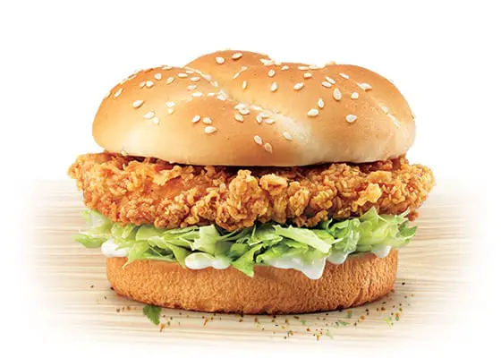

Zinger Burger Recipe

Description
This KFC zinger burger recipe allows you to create the delicious and tangy zingers at home whenever your want. We also have a recipe for the special KFC zinger sauce which you can find here.
Top tip! You can store the raw marinated chicken fillets in your freezer and when you fancy a zinger burger, simply fry the chicken and prepare your zinger burger and zinger sauce in only a few minutes. Quick and easy!
Ingredients
- 3 boneless chicken breasts (around half a kg)
- 1 tspn of pepper
- 1 tspn of salt
- 2 tblspns of worcestershire sauce
- 1 tspn of Mustard powder or all spice powder
- 2 tblspns of Flour
- 1 Egg
- Soft seeded burger buns
- Mayonnaise or KFC Zinger Sauce
Steps
You can find our recipe for the
KFC zinger sauce here.
- Prepare your chicken breasts by slicing them if they are too large. Then marinate the chicken breasts with the pepper, salt, mustard or all spice powder, and Worcestershire sauce. Leave the chicken over night or at least 4 hours.
- To prepare the batter, beat together an egg and 2 tablespoons of water, then set this aside.
- Place the marinated chicken breasts in flour and coat generously. Dip them in to the egg and then in to the breadcrumbs, until well coated.
- Deep fry the coated chicken breasts in hot oil on a medium to high heat, until the breasts are golden brown and crispy.
- Slice the buns in half and lightly toast, then stack the final burger, with the lettuce at the top, then the chicken and finally the mayonnaise or KFC zinger sauce. Add sliced American cheese if you fancy a cheesy zinger.